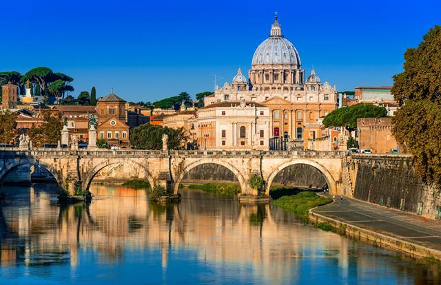
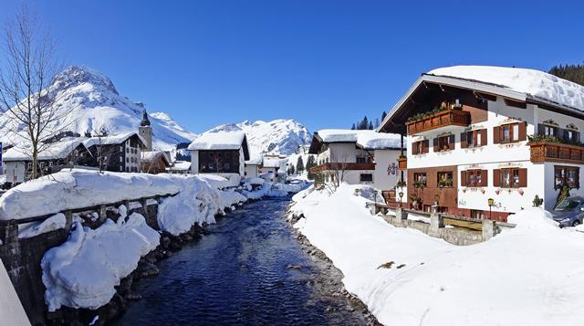
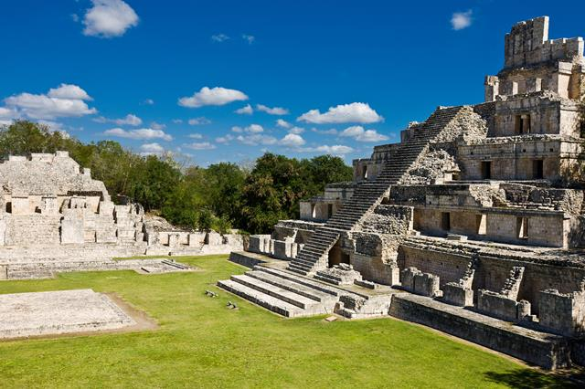

Italië, het land van de pizza, pasta en lambrusco. Maar ook het land van de scooters, voetbal en natuurlijk de Paus in zijn eigen stadstaatje.
Jaar na jaar steken steeds weer ontelbare zonzoekers de Alpen over op weg naar de zonovergoten stranden van de Italiaanse kuststreken.
Maar ook de cultuurliefhebbers komen in Italië ruim aan hun trekken.
Denk aan steden als Rome en Florence met prachtige historische gebouwen en vele kunstschatten.
Venetië met haar door gondola's bevaren kanalen, prachtige paleizen en talloze bruggen is eigenlijk een verhaal apart.
meer info

Er zijn talloze redenen waarom Oostenrijk uitgegroeid is tot het populairste wintersportland voor Nederlanders.
Natuurlijk de gezelligheid van de dorpen, hotels en pensions.
Het enorme scala aan skimogelijkheden van beginner tot super-crack, van snowboarder tot langlaufer en niet te vergeten de vele kilometers wandelpaden door de sneeuw.
Voor elk wat wils, van trendy wintersportplaatsen met een internationale sfeer tot gemoedelijke bergdorpjes.
De dorpen Hippach, Mayrhofen, Finkenberg en Tux hebben hun gebieden op elkaar aangesloten tot één groot, gemeenschappelijk skigebied: Ski Zillertal 3000.
meer info

Cultuurhistorisch gezien steekt Mexico met kop en schouders boven de andere landen uit.
Hier komen we volkeren tegen die niet alleen prachtige en indrukwekkende gebouwen en zelfs hele steden neerzetten, maar die zich ook nog eens generaties lang moesten weren tegen de invloed van concurrerende stammen en uiteindelijk tegen de Spanjaarden.
Mexico is een land van kleurrijke fiëstas en boeiende contrasten.
Van onvoorstelbare culturele schatten uit de tijd van de Tolteken, Azteken en Mayas tot Spaans koloniale erfenissen in plaatsen als Oaxaca en Merida.
Droge woestijnvlaktes, tropische regenwouden, prachtige koraalriffen en hoge bergen karakteriseren het betoverende landschap van Mexico.
meer info